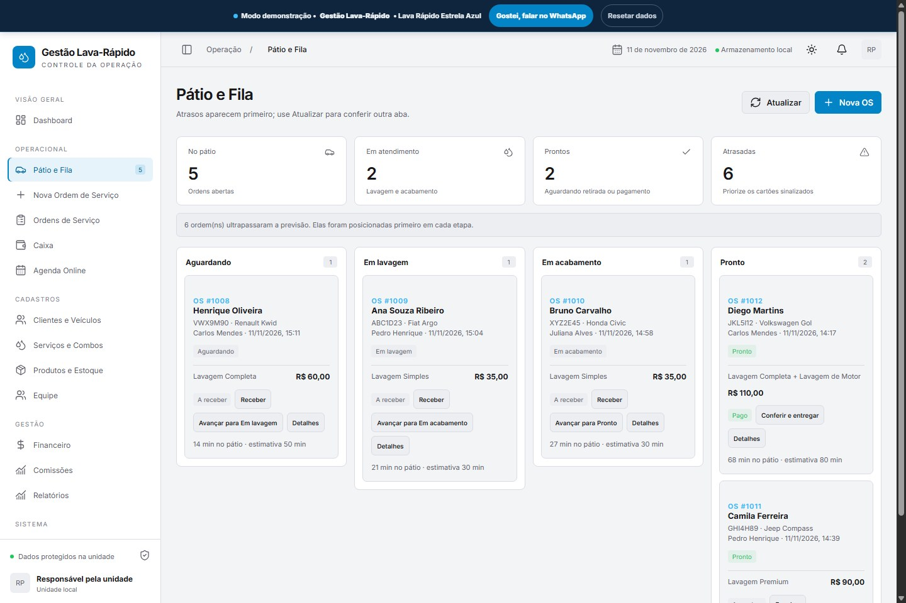

01 / 03 Pátio em tempo real
Cada carro na etapa certa, sem correria no pátio
Acompanhe quantos veículos estão aguardando, em lavagem, em acabamento ou prontos para retirada com o cronômetro de permanência.
- Colunas organizadas por etapa operacional do pátio
- Placa, modelo, responsável e tempo decorrido visíveis no cartão
- Avanço rápido entre etapas e conferência segura antes da entrega
- Contadores instantâneos de operação no topo da tela
Abre direto na tela do pátio do Lava Rápido Estrela Azul.